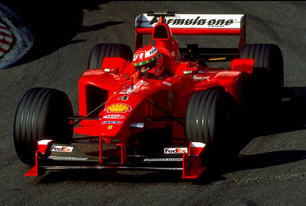
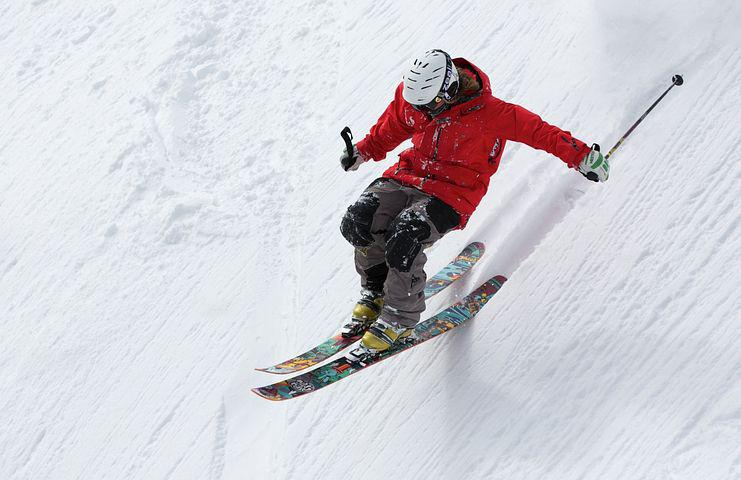
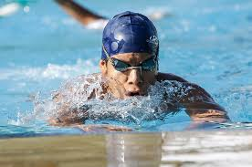
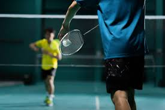

Mbappé teria assinado pré-contrato
com Real Madrid há dois
meses, diz TV...
Inscrições para o 8º Rally Bike prosseguem
até quinta-feira
Amanda Diniz coloca títulos em jogo contra Jessica Serrano em luta histórica no boxe...
Conteúdo semanal
Caminhada
No Dia Mundial da Saúde, caminhada reforça
importância da atividade física na prevenção de doenças
Um regime de caminhada pode ajudá-lo a perder peso; abaixar sua pressão arterial e colesterol; e reduzir o risco de doenças cardíacas, diabetes e câncer; entre outros benefícios.
Basquete
Seleção brasileira de basquete terá 15 gaúchos nas
Surdolimpíadas
A estreia do Brasil no masculino será na terça-feira, 3 de maio, às 12h30min, no Ginásio do Vascão
Futebol
Adversário do Criciúma tem “queridinho” e
“velhos conhecidos” do futebol catarinense



